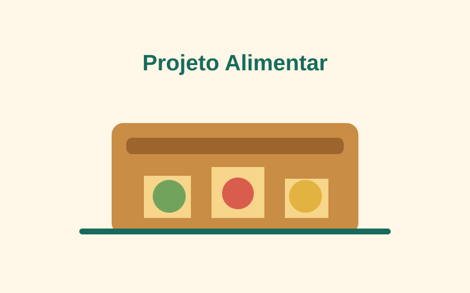
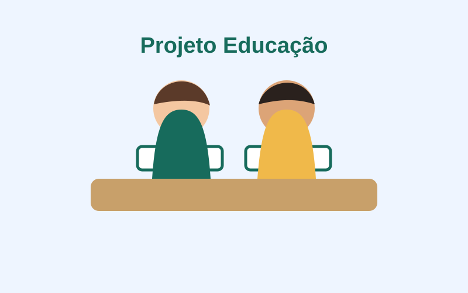
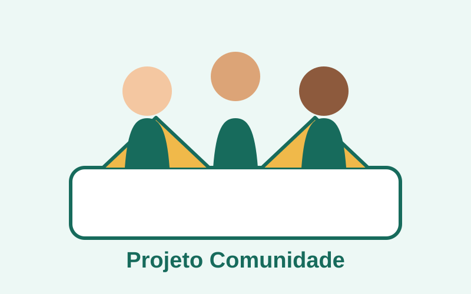

Projeto Alimentar
Arrecadamos alimentos básicos e montamos cestas destinadas a famílias em situação de vulnerabilidade.
Como ajudar: doando alimentos, divulgando campanhas ou participando das entregas.
Nossas iniciativas
Conheça algumas das frentes de atuação da ONG Esperança e escolha a melhor forma de contribuir com a comunidade.
Frentes de atuação

Arrecadamos alimentos básicos e montamos cestas destinadas a famílias em situação de vulnerabilidade.
Como ajudar: doando alimentos, divulgando campanhas ou participando das entregas.

Promovemos oficinas e arrecadamos materiais escolares para apoiar crianças e jovens em sua trajetória de aprendizagem.
Como ajudar: doando materiais, oferecendo conhecimento ou apoiando as oficinas.

Organizamos mutirões, eventos e campanhas para fortalecer vínculos e aproximar voluntários das necessidades locais.
Como ajudar: participando dos mutirões e ajudando na organização dos eventos.
Faça parte
Você pode contribuir com seu tempo, conhecimento e disposição. O primeiro passo é preencher nosso cadastro.
Cadastrar-meApoie nossas campanhas
Cada contribuição ajuda a manter nossos projetos e ampliar o atendimento. Você pode apoiar com alimentos, roupas, materiais escolares ou contribuições financeiras.